介绍
欢迎使用91token文档
91Token 是一个统一的 LLM 网关平台，将多个 AI 服务商的接口聚合为标准的 OpenAI 兼容 API，让你通过一个地址访问数十种模型。
本指南按角色分为用户指南与管理员指南两部分，帮助你快速上手并充分发挥平台功能。
平台特点
- 统一 API 接口：使用标准 OpenAI 格式调用所有服务
- 多提供商支持：同时支持 40+ AI 服务提供商
- 智能路由：自动选择最佳提供商
- 实时计费：精确到 token 级别的计费系统
- 灵活配额管理：支持充值、兑换码、邀请返利
快速开始
- 注册账号并登录
- 创建 API 令牌
- 充值配额
- 开始调用 API
功能指南概述
了解平台提供的核心功能
91Token 是一个统一的 LLM 网关平台，将多个 AI 服务商的接口聚合为标准的 OpenAI 兼容 API，让你通过一个地址访问数十种模型。本指南按角色分为用户指南与管理员指南两部分。
核心功能
- 多提供商支持：同时支持 40+ AI 服务提供商
- 统一 API 接口：使用标准 OpenAI 格式调用所有服务
- 智能路由：自动选择最佳提供商
- 实时计费：精确到 token 级别的计费系统
- 访问控制：灵活的 API 令牌管理
支持的服务类型
- 文本生成：GPT、Claude、Gemini 等大语言模型
- 图像生成：DALL-E、Midjourney、Stable Diffusion
- 语音合成与识别
- 嵌入模型：文本向量化服务
注册与登录
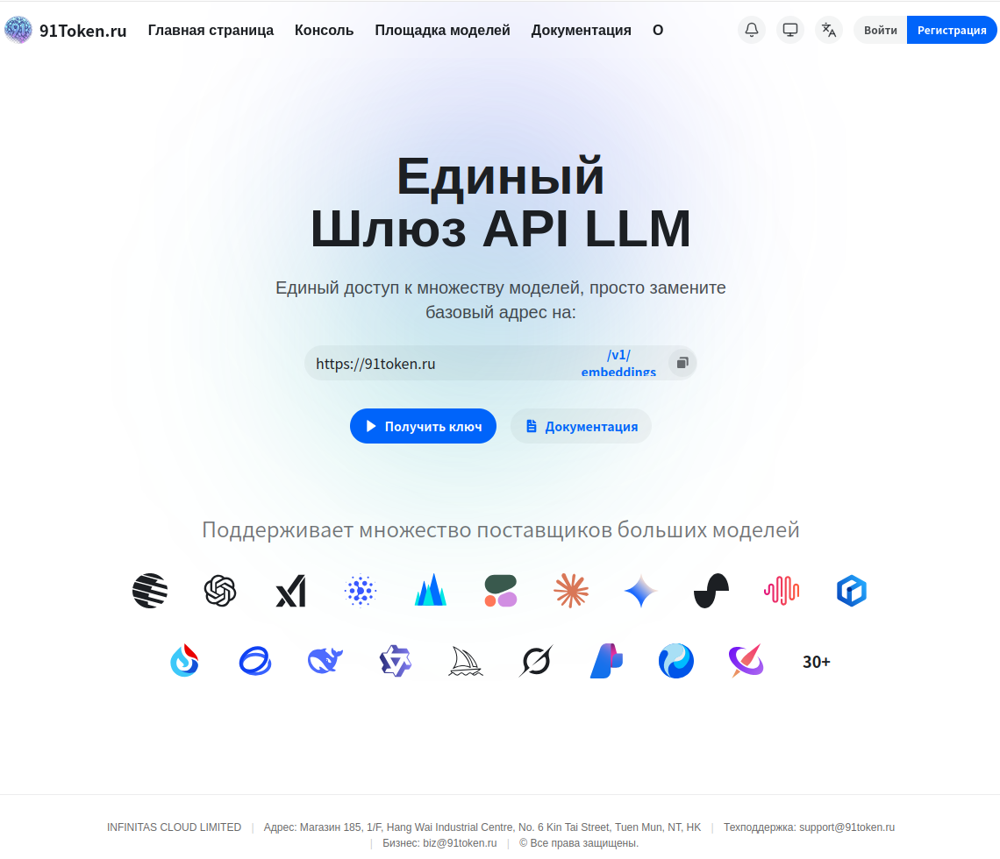
支持账号密码注册，以及多种第三方 OAuth 一键登录
支持账号密码注册，以及多种第三方 OAuth 一键登录。首次使用请先完成注册。
登录
账号密码登录
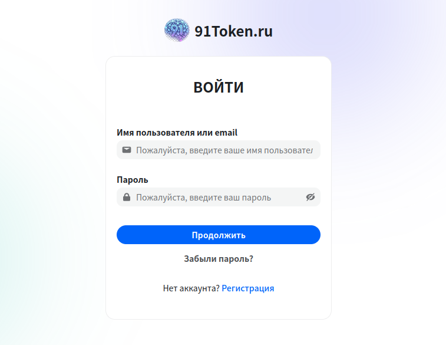
- 打开平台首页，点击右上角「登录」按钮，或直接访问 /login
- 在登录页输入用户名和密码，点击「登录」完成登录
第三方 OAuth 登录
如需使用第三方账号登录，点击页面下方对应平台的图标（GitHub、Discord、LinuxDO 等），跳转至第三方授权页面完成授权后自动登录
忘记密码
忘记密码时，点击登录页的「忘记密码」链接，输入注册邮箱后系统会发送重置链接，点击链接设置新密码，原密码随即失效。
注册
注册流程
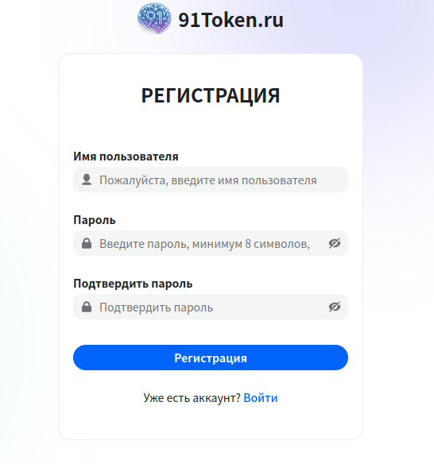
- 在登录页点击「注册」链接，或直接访问 /register
- 填写用户名、密码
- 填写邮箱地址，点击「发送验证码」，将收到的验证码填入输入框
- 点击「注册」完成账号创建，注册成功后自动跳转至首页
个人设置
管理账号基本信息、安全设置和第三方账号绑定
管理账号基本信息、安全设置和第三方账号绑定。登录后点击右上角头像，在下拉菜单中选择「个人设置」，或直接访问 /console/personal。
基本信息
修改用户名
在用户名输入框中输入新用户名，点击「保存」
绑定邮箱
填写邮箱地址，点击「发送验证码」，输入验证码后点击「绑定」
更改密码
依次填写当前密码、新密码、确认新密码，点击「修改密码」
双因素认证（2FA）
开启 2FA 后，每次登录时除密码外还需输入验证器 App 中的动态码，有效防止账号被盗。
开启 2FA

- 在手机上安装验证器 App（推荐 Google Authenticator 或 Microsoft Authenticator）
- 在个人设置页找到「双因素认证」区域，点击「开启 2FA」
- 用验证器 App 扫描页面上显示的二维码，App 中会出现一个 6 位动态码
- 将 App 中显示的 6 位动态码填入验证框，点击「确认开启」
- 系统显示一组备用码，请立即截图或抄写保存，用于无法使用验证器时的紧急登录
警告：备用码只显示一次，关闭弹窗后无法再次查看。丢失备用码且无法使用验证器时，需联系管理员重置。
通知设置
配置接收系统通知的方式，支持邮件和 Webhook 两种方式。
邮件通知
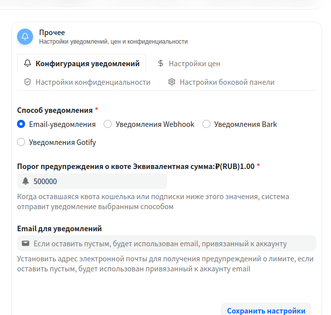
- 在个人设置页找到「通知设置」区域
- 勾选「启用邮件通知」
- 选择要接收通知的事件类型：配额不足提醒、令牌即将过期、系统公告
- 点击「保存」完成配置
Webhook 通知
- 在通知设置区域勾选「启用 Webhook」
- 填写 Webhook URL（接收通知的接口地址）
- 选择要推送的事件类型
- 点击「测试」验证 Webhook 是否可用
- 点击「保存」完成配置
令牌管理
令牌是调用 API 的凭证，每个令牌可独立配置权限范围和配额上限
令牌是调用 API 的凭证，每个令牌可独立配置权限范围和配额上限。左侧导航点击「令牌」，或直接访问 /console/token。令牌列表展示所有已创建的令牌，包含名称、状态、已用配额、剩余配额、过期时间等信息。
创建令牌
基本配置
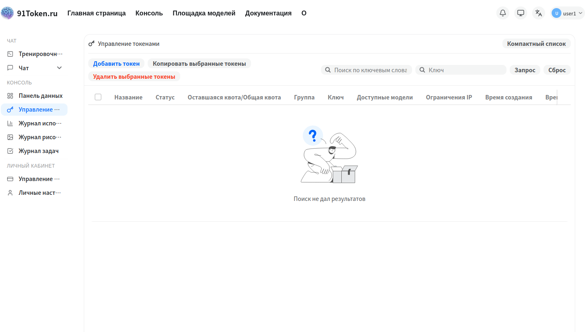
- 在令牌列表页点击右上角「创建令牌」按钮，弹出创建弹窗
- 填写令牌名称（建议按用途命名，如「生产环境」「测试用」）
高级配置选项
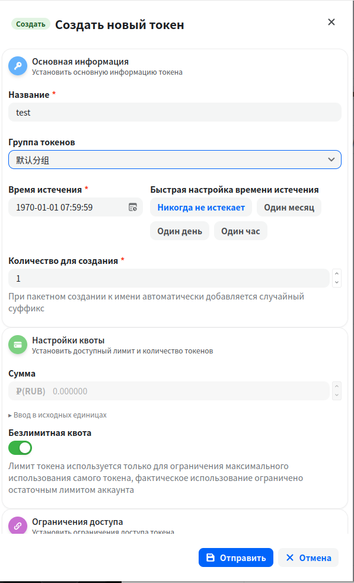
| 配置项 | 说明 |
|---|---|
| 过期时间 | 设置有效期，留空或设为 -1 表示永不过期 |
| 剩余配额 | 限制该令牌可消耗的最大配额，超出后自动失效 |
| 无限配额 | 开启后不受配额限制（仍受账户总配额约束） |
| 模型限制 | 限定该令牌只能调用指定模型，留空表示不限制 |
| IP 白名单 | 限定允许使用该令牌的来源 IP，留空表示不限制 |
| 分组 | 指定该令牌使用的渠道分组 |
保存令牌 Key
点击「提交」，弹窗显示完整的令牌 Key，立即复制保存，关闭弹窗后无法再次查看完整 Key
警告：令牌 Key 仅在创建时完整显示一次，请立即复制保存。令牌 Key 具有完整的 API 调用权限，请勿泄露给他人，不要提交到代码仓库。
编辑令牌
在令牌列表中找到目标令牌，点击右侧「编辑」按钮，可修改令牌的配置选项（不包括令牌 Key 本身）。
删除令牌
在令牌列表中找到目标令牌，点击右侧「删除」按钮，确认后该令牌立即失效，无法恢复。
使用 API
将平台地址替换 OpenAI 的 base_url，使用平台颁发的令牌作为 api_key，即可开始调用
将平台地址替换 OpenAI 的 base_url，使用平台颁发的令牌作为 api_key，即可开始调用。
操练场在线测试
操练场是内置的在线测试工具，无需编写代码即可直接与模型对话，适合快速验证令牌是否可用。
访问操练场
左侧导航点击「操练场」，或直接访问 /console/playground
使用操练场
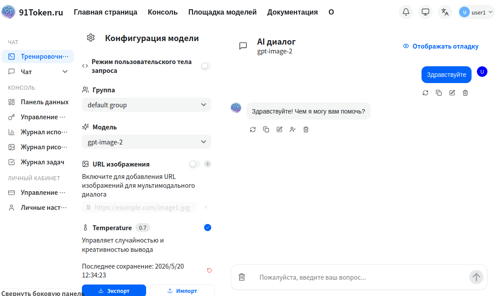
- 在左侧选择要测试的模型
- 在底部输入框输入消息内容，点击发送
- 右侧对话区域显示模型的回复结果
获取 API 地址
复制 API 地址

- 访问平台首页
- 在页面中部找到 API Base URL 显示区域
- 点击复制按钮，将地址复制到剪贴板
配置客户端
将复制的地址填入你的客户端或代码中作为 base_url，配合令牌即可开始调用。
代码示例
Python（OpenAI SDK）
from openai import OpenAI
client = OpenAI(
api_key="sk-xxxxxxxxxxxxxxxx",
base_url="https://91token.ru/v1"
)
response = client.chat.completions.create(
model="gpt-4o",
messages=[{"role": "user", "content": "Hello!"}]
)
print(response.choices[0].message.content)Claude 原生格式
curl https://91token.ru/v1/messages \
-H "x-api-key: sk-xxxxxxxx" \
-H "anthropic-version: 2023-06-01" \
-H "content-type: application/json" \
-d '{"model": "claude-3-5-sonnet-20241022", "max_tokens": 1024, "messages": [{"role": "user", "content": "Hello"}]}'Gemini 原生格式
curl "https://91token.ru/v1beta/models/gemini-1.5-pro:generateContent?key=sk-xxxxxxxx" \
-H "Content-Type: application/json" \
-d '{"contents": [{"parts": [{"text": "Hello"}]}]}'支持的接口端点
| 接口 | 路径 | 说明 |
|---|---|---|
| 聊天补全 | POST /v1/chat/completions | 对话生成，支持流式输出 |
| 文本补全 | POST /v1/completions | 传统补全接口 |
| 向量嵌入 | POST /v1/embeddings | 文本向量化 |
| 图像生成 | POST /v1/images/generations | 文生图 |
| 图像编辑 | POST /v1/images/edits | 图像编辑 |
| 语音转文字 | POST /v1/audio/transcriptions | Whisper 等 |
| 文字转语音 | POST /v1/audio/speech | TTS |
| 重排序 | POST /v1/rerank | 文档重排序 |
| 模型列表 | GET /v1/models | 查询可用模型 |
聊天应用集成
91token 支持快速导入配置到多种 AI 聊天应用，方便测试和日常使用
91token 支持快速导入配置到多种 AI 聊天应用，方便测试和日常使用。
一键导入配置
在控制台→令牌页面可以一键导入配置到支持的聊天应用中。
使用方法
- 在令牌列表页找到要使用的令牌
- 点击令牌右侧的「导入」或「配置」按钮
- 选择目标聊天应用
- 系统自动跳转到对应应用并填充配置信息
Lobe Chat
Lobe Chat 是一款开源的多模态对话应用，支持多种大语言模型（LLM）和插件扩展。它不仅可以实现文本对话，还支持图片、音频等多模态交互，适用于个人助理、知识问答、内容创作等多种场景。
配置步骤
- 打开 Lobe Chat 应用
- 进入设置页面，找到「语言模型」配置区域
- 填写 API 地址和 API Key
- 点击「保存」完成配置
- 在模型选择中即可看到 91Token 提供的所有可用模型
AI as Workspace
AI as Workspace 是一种将人工智能能力集成到工作空间中的创新方式。通过将 AI 助手与日常办公、协作、知识管理等场景深度结合，用户可以更高效地处理信息、自动化重复任务。
支持从 91Token 一键导入配置
AMA 问天
AMA 问天是 91Token 提供的智能问答助手，支持多轮对话和复杂问题解答。用户可以通过自然语言与 AMA 问天进行交流，获取知识、技术支持或业务咨询。
需要先安装 AMA 问天 app
OpenCat
OpenCat 是一款开源的多平台 AI 聊天客户端，支持多种大语言模型接入。用户可以通过简洁的界面与 AI 进行自然语言对话，适用于日常交流、知识问答和内容创作等多种场景。
需要先安装 OpenCat app
手动配置其他应用
对于不支持一键导入的应用，可以手动配置：
| 配置项 | 说明 | 获取位置 |
|---|---|---|
| API Base URL | API 接口地址 | 平台首页或令牌页面 |
| API Key | 令牌密钥 | 创建令牌时显示（仅一次） |
| 可用模型 | 支持的模型列表 | 个人设置→可用模型 或 定价页面 |
定价
了解平台计费方式和模型价格
查看定价
访问定价页
点击左侧导航栏的「定价」，或直接访问 /pricing
浏览模型价格
页面列出所有可用模型，每行显示模型名称、输入价格和输出价格

搜索模型
可在页面顶部搜索框输入模型名称关键词，快速定位特定模型的价格
价格说明
计费规则
- 输入价格：每 1K 输入 Token 消耗的配额
- 输出价格：每 1K 输出 Token 消耗的配额
- 实际消耗 = Token 数量 ÷ 1000 × 对应单价
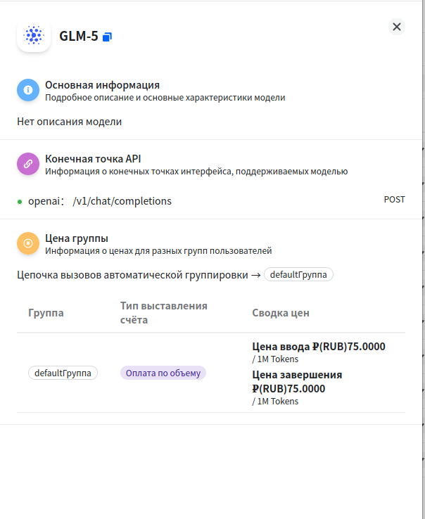
分组差异
不同分组的用户可能享有不同的计费倍率，具体以实际扣减为准，可在充值页查看当前余额变化
使用记录
查看每次 API 调用的详细信息，支持按时间、模型、令牌等条件过滤
查看每次 API 调用的详细信息，支持按时间、模型、令牌等条件过滤。左侧导航点击「日志」，或直接访问 /console/log。普通用户只能看到自己的调用记录。日志列表每行展示一次调用记录，包含调用时间、使用的模型、消耗的 Token 数量和配额、调用状态等信息。
搜索与过滤
设置过滤条件
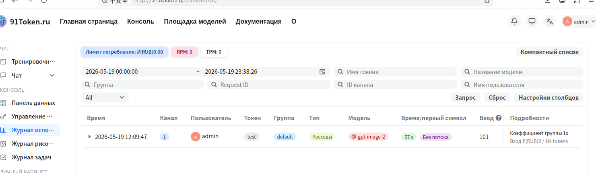
- 在日志页顶部点击「筛选」按钮，展开过滤条件区域
- 可设置以下过滤条件：时间范围（选择开始和结束日期）、模型（输入模型名称关键词）、令牌名（选择或输入令牌名称）
查看过滤结果
设置完成后点击「查询」，列表自动刷新显示过滤结果
数据统计
访问数据看板
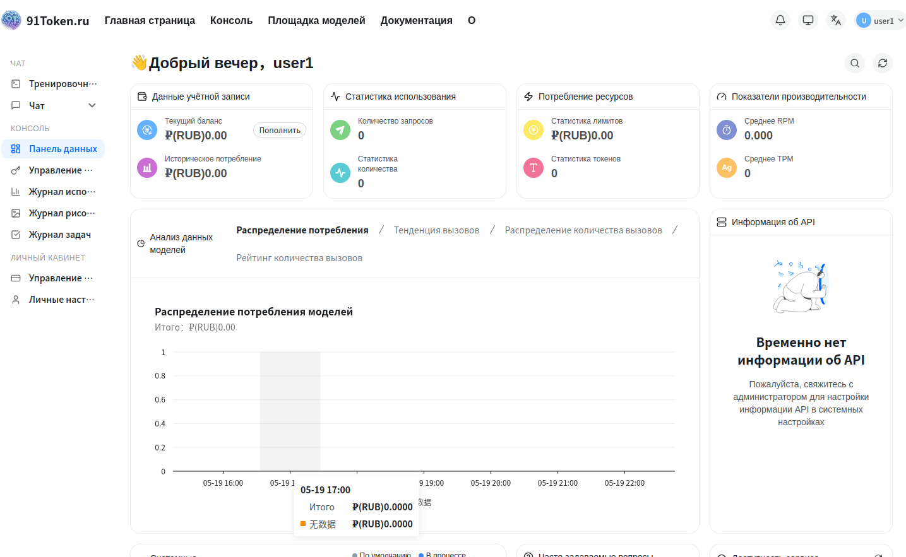
左侧导航点击「数据看板」，或直接访问 /console
查看统计图表
数据看板页面以折线图或柱状图展示每日 API 调用量和配额消耗趋势。将鼠标悬停在图表上可查看具体日期的详细数据。
配额与充值
配额是平台内部计费单位，消耗量 = 实际 Token 数 × 模型倍率
配额是平台内部计费单位，消耗量 = 实际 Token 数 × 模型倍率。左侧导航点击「钱包管理」，或直接访问 /console/topup。支持在线支付充值和兑换码两种方式增加账户配额。
充值方式
| 充值方式 | 说明 |
|---|---|
| 兑换码 | 输入管理员生成的兑换码，直接增加配额 |
在线支付充值
选择充值金额
在充值页选择充值金额，或手动输入自定义金额
完成支付
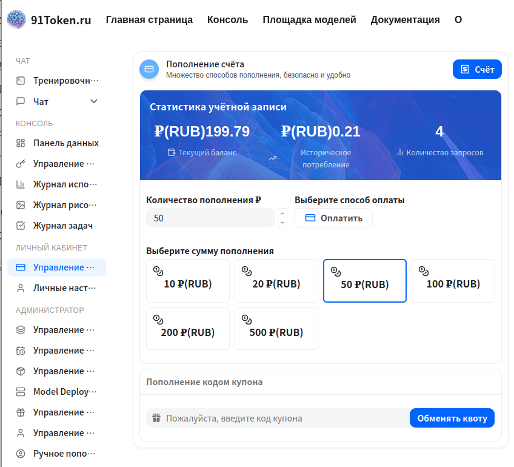
- 选择支付方式（SBP / MIR ）
- 点击「充值」按钮，页面跳转至对应支付平台
- 在支付平台完成付款后，自动跳回平台，账户余额更新
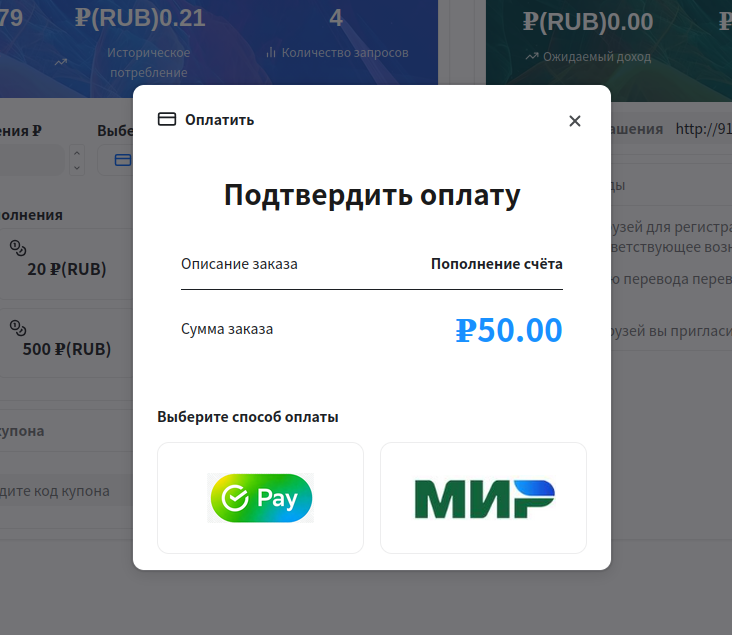
兑换码充值
输入兑换码

- 在充值页找到「兑换码」输入区域
- 在输入框中粘贴或输入管理员提供的兑换码
完成兑换
- 点击「兑换」按钮，系统验证兑换码有效性
- 兑换成功后页面提示获得的配额数量，账户余额同步更新
邀请返利
每个账号都有唯一的邀请码，邀请他人注册并消费后可获得返利配额。
获取邀请码
在充值页或个人设置页找到「邀请」区域，复制你的专属邀请码
使用返利配额
- 将邀请码分享给他人，对方注册时填写邀请码
- 被邀请用户消费后，你的返利配额余额自动增加
- 点击「转入余额」按钮，将返利配额转入账户主余额后即可使用